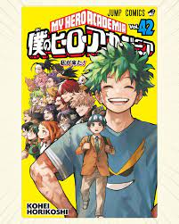
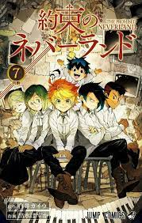
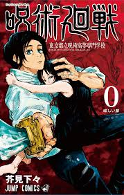
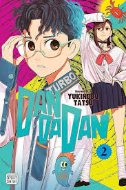
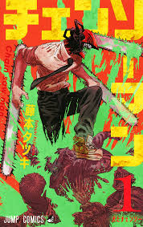
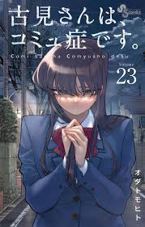
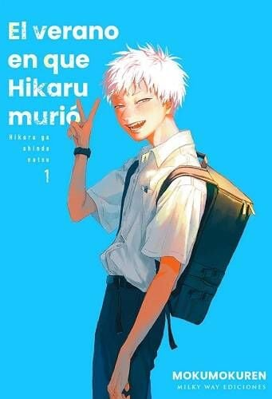
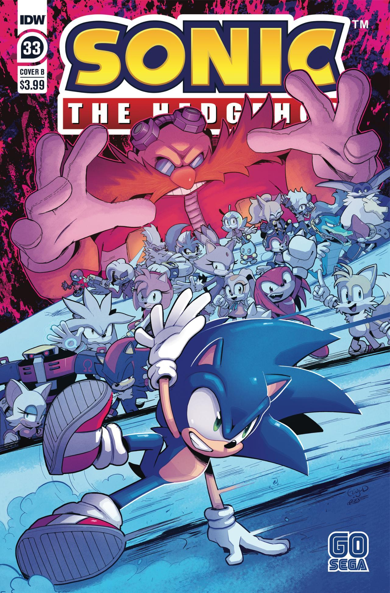
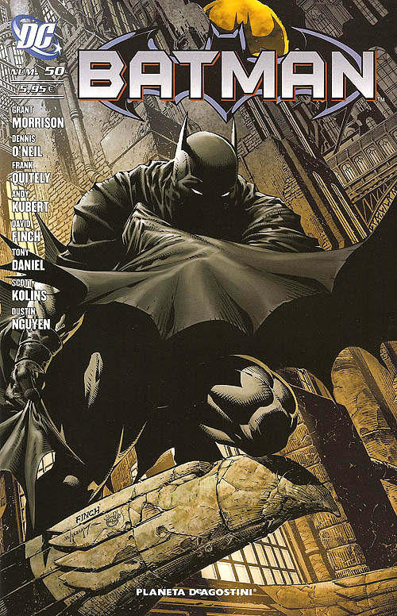

Ultimo tomo del manga de My Hero Academia, el volumen 42, tiene 184 páginas. Incluye unas 60 páginas de contenido adicional que expanden el final, como un epílogo de 38 páginas ambientado después del capítulo final.

Un grupo de huérfanos talentosos que descubren que su aparente hogar idílico, el orfanato Grace Field House, es en realidad una "granja" para criar niños como alimento para demonios. Los protagonistas, Emma, Norman y Ray, deciden planificar una peligrosa fuga para escapar con el resto de sus hermanos y exponer el oscuro secreto que su amada "madre" les ha ocultado.

Es la precuela del manga principal de Jujutsu Kaisen en donde nos relataran las historia de Yuta Okkotsu junto a sus compañeros y profesor para desacer la maldicion de su amiga. Incluye 200 paginas en su version en español

Okarun, un otaku al que le fascinan el ocultismo y los fenómenos paranormales, recibe la maldición de la turbo abuela en un túnel embrujado. Ahora lo acompaña Momo Ayase, una chica poseedora de poderes paranormales, para retar a la turbo abuela a un juego de “la traes” y así romper la maldición. El volumen 2 de Dandadan tiene entre 195 y 208 páginas, dependiendo de la edición y la editorial.

Denji, un joven huérfano y extremadamente pobre que trabaja como cazador de demonios para saldar las deudas de su difunto padre. Su única compañía es Pochita, un demonio con forma de perro que lo acompaña en sus misiones. Aunque luego de que Denji es atacado, Pochita le da su corazon para que viva y cumpla sus sueños. Este tomo contiene 192 paginas en total.

El volumen 23 de Komi-san no puede comunicarse se centra en la incomodidad y desarrollo de la relación entre Komi y Tadano al ser novios, así como en la competencia de disfraces para una cita y una estudiante obsesionada con las graduaciones. El volumen incluye capítulos donde los protagonistas se enfrentan a nuevos desafíos en su comunicación y otros acontecimientos importantes para la trama.

"No me importa lo que seas, porque no tenerte m s conmigo ser¡a muchopeor..." Hace un tiempo, Hikaru desaparecio en la montaña durante una semana y, al regresar, no recordaba nada de lo sucedido en esos dias. Aunque ha seguido con su vida normal, Yoshiki, su mejoramigo, ha notado que hay algo diferente en el. Cuando finalmente descubre la verdad, decide hacer ver que ese Hikaru sigue siendo su querido amigo de la infancia.

Sonic the Hedgehog descansa en un árbol fuera del taller de Miles "Tails" Prower. Dentro del taller, Rouge the Bat ha traído a Tails material de los archivos personales del Dr. Eggman, que se llevó mientras estaba en la Nave Facial. Amy termina de ayudar a descargar el resto de las partes del cuerpo de E-123 Omega, diciendo que hoy puede saltarse su entrenamiento de boxercise. Edicion issues#33 de la serie de comics de sonic the Hedgehog

Una edicion de coleccion de comics de Batman para grandes coleccionistas y fanaticos de los comics del caballero de la noche. Aqui se nos mostraran varias de sus aventuras y casos que suceden en Ciudad Gotica y todo causado por los mayores villanos de Batman, como el Guason, Harley Quinn, el Acertijo y muchos otros villanos. Pero Batman no estara solo, estara acompañado de Robin, su mayordomo Alfred y otros aliados.